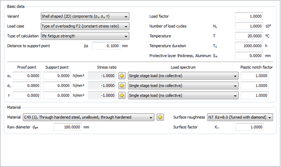

|
|
|


零件形状的选择
零件形状的选择：您可以选择杆形、壳形或块形零件。它们各自具有不同的应力分量或应力类型，以及不同的索引。如果应用局部概念，通常存在块形零件。所选的零件形状会影响应力分量的数据输入。

图 57.1：局部应力校核的主界面
杆形零件：以下与零件相关的坐标系适用于杆形零件，即杆、梁和轴：x 轴位于杆的轴线上，y 轴和 z 轴是截面的主惯性轴，规定方式需使惯性矩满足 Iy > Iz。
对于平面（扁平）零件，即圆盘、板和壳体，在校核点应使用以下与零件相关的坐标系：X 轴和 Y 轴位于平面内，Z 轴在厚度方向上垂直于该平面。Z 方向上的正应力和剪切应力应可忽略不计。
块形零件：适用与体积相关的坐标系。需要计算主应力 σ1、σ2 和 σ3。在 3D 零件自由表面上的校核点 W 处，主应力 σ1 和 σ2 应沿表面方向作用，主应力 σ3 垂直于它们指向零件内部。通常，对于所有应力，存在一个垂直于表面的应力梯度和两个沿表面方向的应力梯度。但是，在计算中只能考虑垂直于表面的 σ1 和 σ2 的应力梯度，而不能考虑在表面的两个方向上 σ1 和 σ2 的应力梯度，也不能考虑 σ3 的任何应力梯度。
Selection of the part form
Selection of the part form: you can choose parts that are rod-shaped, shell-shaped or block-shaped. They each have different stress components or stress types, and different indexing. If the local concept is applied, block-shaped parts are usually present. The selected part form influences the data input for the stress components.
Figure 57.1: Main screen for the proof with local stresses
Rod-shaped parts: the following part-related coordinates system applies, for rod-shaped parts, i.e. rods, beams and shafts: The x-axis lies in the rod axis, and the y- and z-axes are the main axes of the cross section, and need to be specified in such a way that Iy > Iz applies for the moment of inertia.
For planiform (flat) parts, i.e. discs, plates and shells, the following part-related coordinates system should apply in the proof point: the X- and Y-axes lie in the plane, and the Z-axis is vertical to it in the direction of thickness. The normal stress and the shear stresses in the direction of Z should be negligible.
Block-shaped parts: volume-related coordinates systems apply. The primary stresses σ1, σ2 and σ3 need to be calculated. In the proof point W on the free surface of a 3D part, the primary stresses σ1 and σ2 should act in the direction of the surface and the primary stress σ3 points into the interior of the part, vertically to them. Generally, there is one stress gradient that runs vertically to the surface, and two stress gradients that run in the direction of the surface, for all stresses. However, only the stress gradients for σ1 and σ2, running vertically to the surface, can be taken into account in the calculation, and not the stress gradients for σ1 and σ2 in both directions on the interface and none of the stress gradients for σ3.